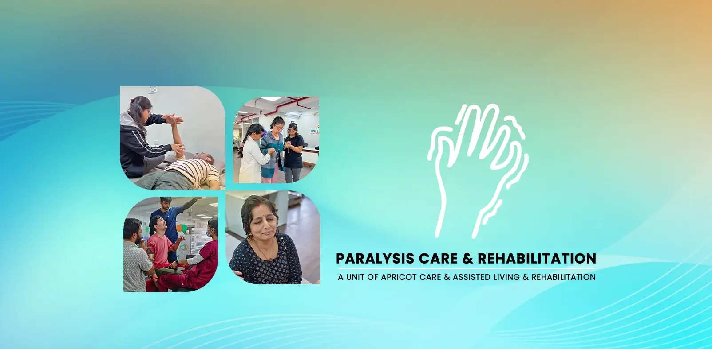
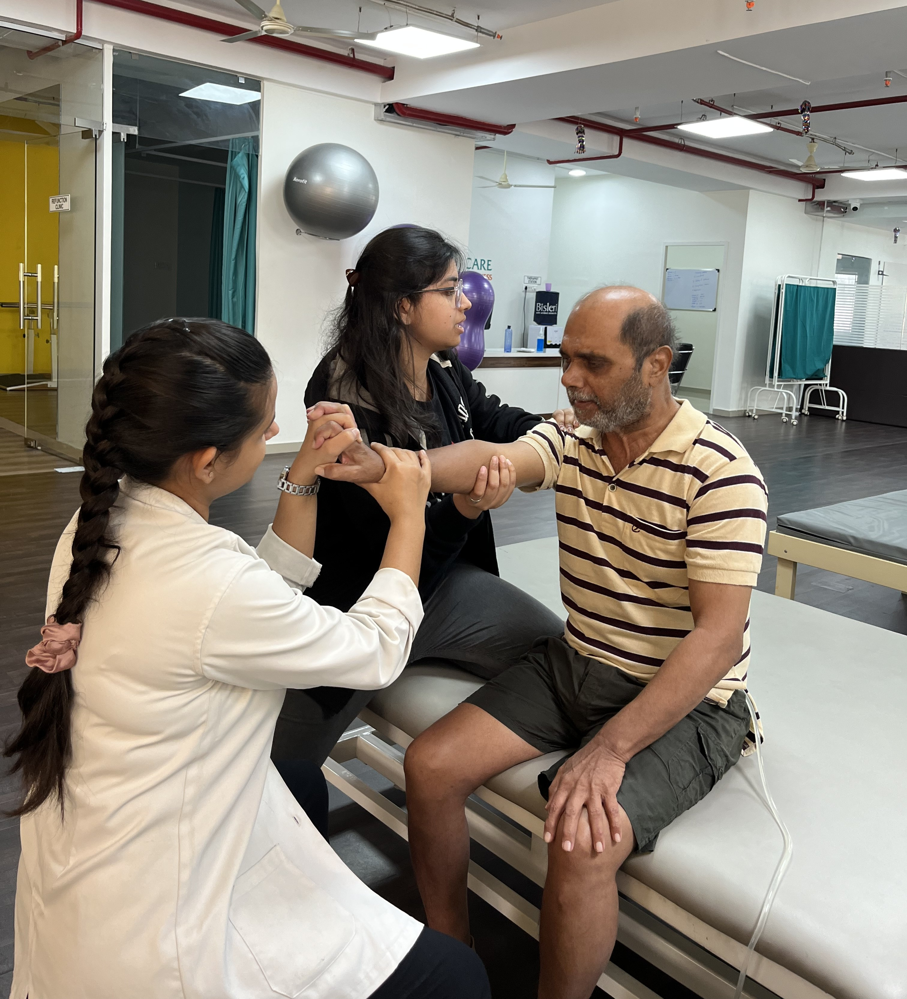

Paralysis Care Center in Pune — Apricot Care


Patient-first neuro-rehabilitation in a calm, supportive setting
Paralysis changes daily life. It affects movement, mood, and identity. At Apricot Care, Pune, we treat the person, not just the condition. Our team builds a clear plan for you. We focus on safe mobility, communication, self-care skills, and emotional strength. You get steady guidance, honest goals, and compassionate care.
Understanding Paralysis
What it means and why it happens
Paralysis is the loss or reduction of voluntary muscle control. Signals between the brain, spinal cord, & muscles get disrupted. This can follow stroke, spinal cord injury, brain injury, multiple sclerosis, infections, tumors, autoimmune disease, or genetic conditions. It may be temporary or long-term. Early assessment improves outcomes.
Understanding Paralysis
How Apricot Care supports you
We begin with a detailed neurological review, functional testing, and goal setting. Your plan covers movement, balance, hand function, speech or swallowing, continence, skin care, nutrition, and mental health. We update it as you progress.
Types of Paralysis
Clear terms, practical guidance
- Monoplegia affects one limb. It often follows localized nerve damage or stroke.
- Hemiplegia affects one side of the body. It is common after a stroke.
- Paraplegia affects both legs, sometimes the lower trunk. It usually follows spinal cord injury.
- Quadriplegia (Tetraplegia) impacts all four limbs & usually the trunk. Cervical cord injuries are typical causes.

Muscle tone patterns
- Flaccid paralysis presents with limp, weak muscles, and reduced reflexes.
- Spastic paralysis presents with stiffness, spasms, and brisk reflexes.
Understanding tone guides therapy choices, stretching plans, splinting, and medication needs.
Symptoms We Evaluate
More than weakness
- Loss of movement or precision.
- Changes in sensation, numbness, or tingling.
- Spasms, stiffness, or cramps.
- Swallowing or speech difficulty.
- Balance issues and falls.
- Bowel or bladder changes.
- Skin risk from pressure and reduced mobility.
- Energy, sleep, and mood changes.
Causes and Risk Factors
Why prevention and control matter
Causes include stroke, spinal cord injury, traumatic brain injury, MS, ALS, Guillain-Barré syndrome, infections, tumors, and genetic disorders.
Risks rise with high blood pressure, diabetes, vascular disease, smoking, alcohol misuse, trauma, certain medications, and age-related degeneration.
We help you reduce risks through medical control, safer movement, and lifestyle coaching.
How Do We Diagnose?
A thorough, stepwise pathway
Clinical assessment:
- History, strength, tone, reflexes, sensation, gait.
Occupational Therapy
Imaging:
- MRI or CT to visualize the brain and spine.
Electrodiagnostics:
- EMG and nerve conduction to map nerve and muscle function.
Electrodiagnostics:
- EMG and nerve conduction to map nerve and muscle function.
Blood tests:
- To check inflammation, infection, or metabolic issues.
Lumbar puncture:
- Is performed when specific conditions are suspected.
The aim is clarity:
- Define cause, map function, and plan targeted care.
Our Rehabilitation Approach
Personalized. Measurable. Compassionate.
We create a plan that fits your goals, home setup, and daily roles. We combine movement science with practical life skills. You will know what we are doing and why.
The Core Team
Neurologists & Physiatrists
Oversee medical and rehab strategies.
Physiotherapists
Rebuild strength, endurance, and safe mobility.
Occupational Therapists
Restore hand use and daily activities.
Speech-Language Therapists
Address speech, cognition, and swallowing.
Clinical Psychologists
Support coping, motivation, and mood.
Nurses & Dietitians
Safeguard skin, nutrition, and day-to-day care.
Evidence-Led Therapies
What we deliver, session by session
Task-specific drills, motor relearning, sit-to-stand practice, balance and gait training, treadmill with harness support when needed.
Task-specific drills, motor relearning, sit-to-stand practice, balance and gait training, treadmill with harness support when needed.
Assists weak muscles during movement to reinforce correct patterns.
Strengthens brain-body pathways, reduces neglect/pain.
Stretching, positioning, splinting; medical options coordinated by physicians.
Articulation therapy, language interventions, cognitive behavioral therapy, diet texture progression, swallow safety.
It includes grasp-release patterns, bilateral activities, and adaptive equipment for tasks such as writing, eating, & using a phone
Breathing exercises, posture correction, & energy conservation.

A Holistic Approach to Recovery
Beyond therapy: Technology, nutrition, support, and reintegration for a safer, stronger return to life.

our service
Our Comprehensive Care and Support Services
.webp)
.webp)
-(1).webp)
Two tracks that work together
Treatment addresses the root condition and restores function through therapy, medication, or surgery when indicated.
Management maintains gains with exercise, stretching, nutrition, skin care, continence plans, and follow-ups. We make both simple and doable, so progress lasts.
.webp)
.webp)
.webp)
.webp)
.webp)
.webp)
.webp)
.webp)
.webp)
.webp)
.webp)
.webp)
Why Choose Apricot Care Assisted Living and Rehabilitation for Spine Care in Pune?
Specialist team with modern tech
Neuro-experienced clinicians using robotics, VR, FES, & evidence-based methods.
Structured Results
You can track and understand consistent reviews, clear goals, and measurable progress.